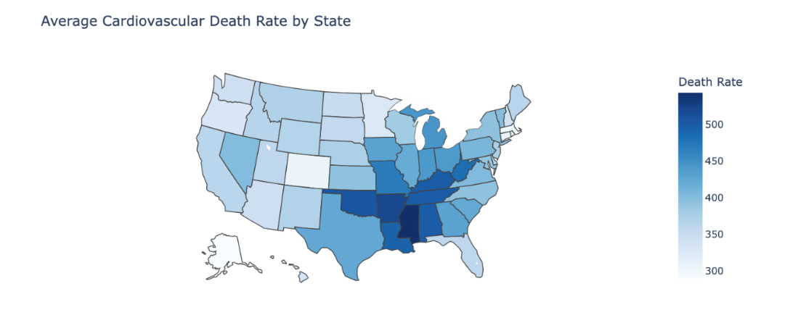
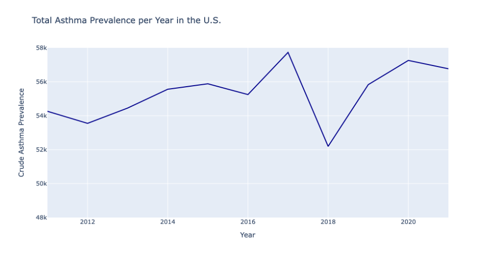
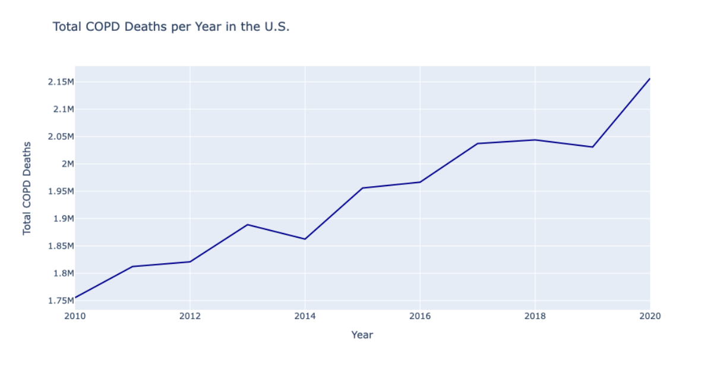

Climate Change
As was mentioned in Chapter 3, emissions are known to be the cause of many various health problems in humans (Yang & Omaye, 2009). Even so, power plants continue to produce air pollutants that degrade public health. Air pollutants contribute greatly to chronic diseases and mortality, including cardiovascular diseases, asthma, and chronic obstructive pulmonary diseases. To explore this further, we looked at two datasets representing chronic and cardiovascular diseases. In this chapter, we identify patterns between these diseases and emissions history.
Dataset Overview
U.S. Chronic Disease Indicators (CDI)
This dataset contains state-specific indicator data from the CDC between the years 2001-2021. To uniformly collect and report chronic disease information, the data was compiled from various sources such as death certificates, state registries, etc. It totals 1,048,576 datapoints on 124 different indicators defined by the CDC’s Division of Population Health. We used this dataset to identify any increase in frequency of negative health conditions over the years.
Rates in Heart Disease and Stroke Mortality Among US Adults
This dataset is from the EPA and contains rates and trends in heart disease and stroke mortality. Specifically, this report presents county estimates of heart disease and stroke death rates in 2000-2019 by age group (ages 35–64 years, ages 65 years and older), race/ethnicity (non-Hispanic American Indian/Alaska Native, non-Hispanic Asian/Pacific Islander, non-Hispanic Black, Hispanic, non-Hispanic White), and sex (women, men). The rates and trends were estimated by the CDC National Vital Statistics System, using a Bayesian spatiotemporal model and a smoothed over space, time, and demographic group. Rates are age-standardized in 10-year age groups using the 2010 US population.
Cardiovascular Disease
Cardiovascular disease is one of the leading causes of both death and disability in the United States (Yang & Omaye, 2009). Studies suggest that humans exposed to methane emissions have higher rates of oxidative stress, inflammation, and vascular dysfunction. All of which are key risk factors for cardiovascular disease (Mendoza-Cano, et al., 2023). To explore the direct effect power plants, have on humans specifically, we investigated similar trends of cardiovascular disease in the US and assessed any relationships.
As can be seen in the figure representing heart disease related deaths, states like Texas and Georgia have the highest mortality rates for heart disease relation deaths among adults aged 35 years or older in the United States. By cross referencing this figure with the map of power plant locations in the United States, there appears to be a pattern between power plant density and heart disease mortality in adults. This supports the idea that individuals who live near coal fired power plants are more exposed to harmful methane and N2O emissions which could cause such individuals a higher risk of developing health problems, like cardiovascular disease.
Asthma
Long term exposure to emissions can also aggravate respiratory diseases, especially asthma. A study in Birmingham, Alabama was conducted to determine if weekly variations in air pollution affected asthma hospitalizations between 1988 and 1990. This study found that smoke and air pollution, even at moderate levels, produced significant health effects and could be associated with more hospital admissions (Yang, 2009). With asthma being such a prevalent disease among Americans, air pollution should be reduced to prevent more widespread morbidity and mortality.
The figure seen above represents the percentage of adults reported to have had asthma over the age of 18 from 2011-2021. A steady increase in this metric can be observed over this time frame. In 2011, the percentage of adults with asthma was 9.8408% while in 2021, the number was 10.6493%. This difference may not seem significant, however, when considering that the population of adults in the U.S. over the age of 18 in 2021 was 259,219,518, which means these numbers account for an increase of roughly 2 million people (Annie E. Casey Foundation, 2023).
Chronic Obstructive Pulmonary Disease
Chronic obstructive pulmonary disease (COPD) is a group of various lung diseases that obstruct airflow, making it difficult to breathe. Oxidative stress caused by air pollutants are known to be common initiators and promoters of damage produced by COPD. Studies have shown that in Sydney, Vancouver, Reno, and other U.S. cities, hospital admissions for COPD were reported and was found to be associated with air pollution (Yang & Omaye, 2009).
This figure visualizes the average deaths per 100,000 population among adults aged 45 years or older with chronic obstructive pulmonary disease (COPD) as the underlying or contributing cause from 2010-2020. It is clear the graph depicts a noticeable upward trend over the specified period. This alarming increase in mortality rates associated with COPD may be indicative of a potential association with declining air quality during the same period. Further investigation into environmental factors and air pollutant levels could provide valuable insights into the observed health outcomes.